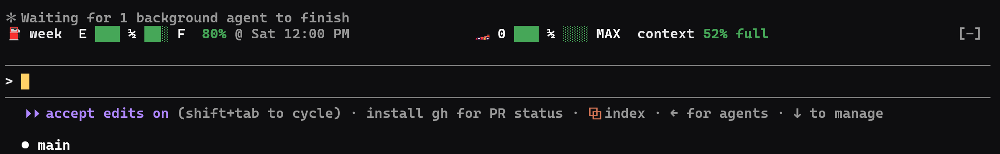

MODS FOR CLAUDE CODE · ROUND 01
Small mods that put a dash above the prompt: a fuel gauge, a speedometer, a tach, a glovebox for the notes that matter. Read it at a glance and keep your eyes on the road.
6 official mods listed in Anthropic's Claude Code plugin directory ▸
LIGHTS OUT AND AWAY WE GO

All 19 mods. Pick a tyre to see one family.
These 6 passed Anthropic's review and are listed in the Claude Code plugin directory, as of Oct 6, 2026.
Built by Rostech and installed from our own garage. Not in Anthropic's directory yet.
BOX 1 add the garage
/plugin marketplace add DJPalefaceSD/rostech-modsBOX 2 fit a mod (swap in its name)
/plugin install <mod>@rostechEach mod's own page has its exact install line.